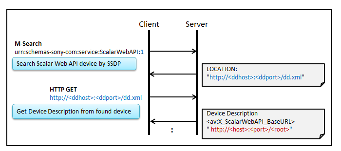
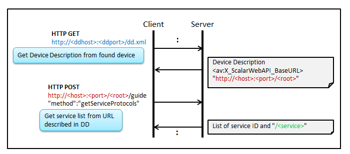
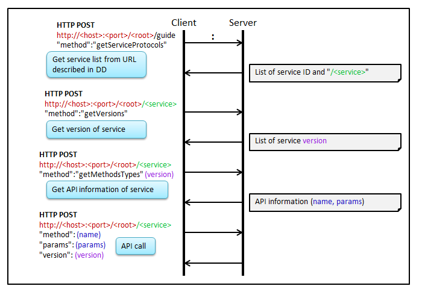

This chapter explains the initial procedure that is recommended to be observed by client application and the rule to follow.
Client application can find the base URL (http://<host>:<port>/<root>/), using device discovery described here.
In device description, 2 formats are defined to describe Scalar Web API information. Unless there is a special reason, Format A which is lightweight is recommended. See the Scalar Web API protocol specification for details.
The following examples are based on Format A.

To find the service list supported by the server device, client application can use getServiceProtocols in the guide service that must be supported by all Scalar Web API devices. In case device discovery is available on target device, supported service lists are also available in device description.

Client application can use this information to check if necessary services are available.
To find the available APIs in each service, client application can use getVersions and getMethodTypes that must be supported by all Scalar Web API devices as follows.

Client application can use this information to check if necessary APIs with assumed version are available. In case server device supports new version APIs that are modified from old version, device is recommended to support old version API as well, considering a transition period of client application.
Some devices support new API getSupportedApiInfo can be used to get service list and API list at the same time.
Please find more detail in getSupportedApiInfo for more detail.